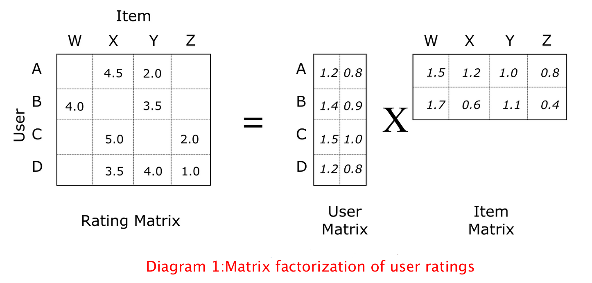
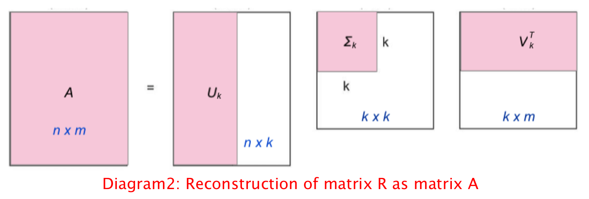
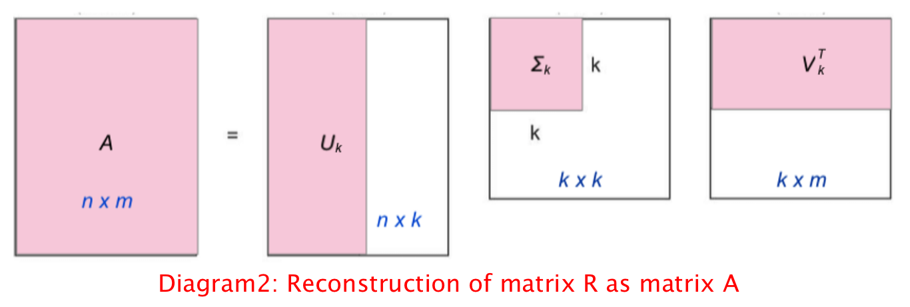
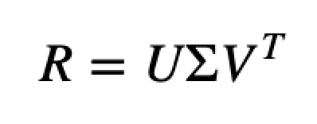

Collaborative model
Collaborative filtering(CF) makes use of the assumption that if A has the same preference as B on a set of items, given an item which is rated by A but unknown to B. B is more likely to give the same rating as A on that item.
The common method for CF is known as Nearest Neighborhood. As the name suggest, it finds the K-nearest neighbors (KNN) of targeted user based on distance. The items which are not rated by the user will be predicted based on the neighbors'(similar users) rating.
However, this method doesn't work well if the neighbors were not rated the items (sparcity problem). It is also not computationally efficient for massive data.



Matrix factorization is another CF method that could avoid sparsity and scalability problems.
It decomposes the original sparse matrix into the product of two low-dimensional rectangular matrices with latent factors as shown in Diagram 1.
There are many ways to factor matrices. Singular value decompostion (SVD) is useful for making recommendations. Mathematically, it decomposes R into two unitary matrices and a diagonal matrix:

1. R is user ratings matrix
2. U is the user “features” matrix, represents users preference on each features
3. Σ is the diagonal matrix of singular values
4. is the item “features” matrix, represents composition of each features in the item
is the item “features” matrix, represents composition of each features in the item
We could sort the values of Σ by decreasing the absolute value and truncate matrix Σ to first k dimensions (k singular values), then reconstruct R as matrix A as illustrated in Diagram 2.
To achieve A ≈ R, value k is selected in a way that matrix A captures most of the variance within matrix R.